In this post I take a look at the resolution providing free transport for car drivers in case of huge air pollution, adopted in Krakow in 2015. Two versions of this resolution have been in use. In the former, decision about providing free transport was on a basis of measurements from past days. In the current version it is based on forecasts. In the first part of the post I explore validity of particular decisions and check some common opinions about them. In the second part I try to reconstruct forecast model getting better result from the point of view of decision making process.
Air pollution in Krakow
From many years the city of Krakow faces serious environmental problem of air pollution. According to European Environment Agency report from 2013 Krakow is third mostly polluted city in Europe among around 400 investigated 1.
There are several sources of air pollution in Krakow and the impact of all of them is amplified by unfavorable geographical location. They also differ for different types of pollution. Here I focus on Particulate Matter 10 nm (PM10) for reasons explained below. Report contributed in 2015 to Malopolska Marshalls Ofiice 2 suggests that main sources of PM10 pollution are:
- local, superficial sources (e.g. chimneys’ smoke): ~ 57%
- industry: ~23%
- local communication: ~16%
Free transport resolution
Several programs aimed at pollution reduction have been started in last years. One of them is the resolution, adopted in December 2015 by municipal council. It allows car drivers and their passengers (in a number specified in cars registration document) to use public transportation means for free at given day if PM 10 pollution at the day before was high enough.
Simplifying a little (there were some changes in resolution, adopted in October 2016), pollution level thresholds for free transportation announcement were set at 150 \(\mu g\)/\(m^3\) in at least one of two time windows:
- from 1 am to 4 or 5 pm
- from 12 am to 10 or 11 pm
Pollution level was calculated as average of measurements results from all measurement stations provided by Regional Inspectorate of Environment Protection.
Although the idea of providing free transportation has been widely supported, criteria adopted in municipal council document were often criticized. The main disadvantage, which was pointed out, was the observation that in such a shape the resolution always works with one day lag. If the pollution was high at a given day and not at the day before, there was no possibility to announce free transport then, but only at the following day.
For this and similar reasons the resolution was changed in December 2017 and now the decision about announcement of free transport in based on forecasts provided by Institute of Meteorology and Water Management.
Aims of the report
In this paper I am going to examine effects of the resolution and check whether some common criticisms are sound
Data
I have obtained data from the following sources:
- Information about days, when free transport was provided I have received as a response for public information request sent to City Hall (Attachment 1, in Polish), as there is no publicly available register of all free transport announcements. Because there were some inconsistency between data I received and records in the Bulletin of Public Information (exhibiting clear patterns as e. g. one day lag) I have eventually composed list of the free transport days from those two sources.
- Data about PM 10 pollution I have scrapped from Regional Inspectorate of Environment Protection site (http://monitoring.krakow.pios.gov.pl/dane-pomiarowe/automatyczne) using automated queries run with
curllibrary. - Meteorological data came from Institute of Meteorology and Water Manaagement (IMGW) archives (https://dane.imgw.pl/data/dane_pomiarowo_obserwacyjne/).
Pollution course
The figure below shows day-by-day course of the average level of PM 10 pollution. Daily norm of admissible pollution is 50 \(\mu g/m^3\) and it shouldn’t be exceeded more than 35 times a year. I focus only on data from November 1st to March 31st, since there norms exceedeness in summer months almost never occur.
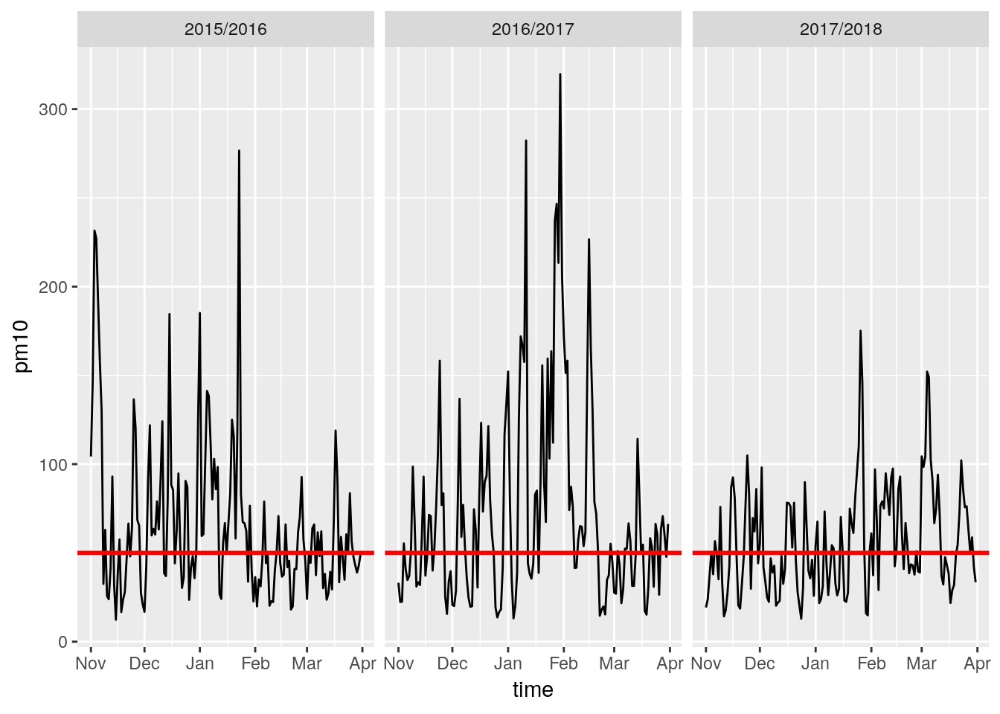
Figure 1: Seasonal course of PM 10 pollution It is interesting to look at the averaged course of pollution in one day:

Figure 2: Averaged Daily Course of PM 10 Pollution in winter
The highest level is observed at night, most probably because of heating in houses. We observe decreasing trend towards morning, when pollution slightly increases. Then it goes to minimum at afternoon and returns to high values at evening and night.
As we will see this pattern can be exhibited in different scale and contaminated or even changed by different factors.
Free Transport Annoucements
The following table presents when the free public transport for car drivers was provided:
| Heating season | Free transport days |
|---|---|
| 2015/16 | Jan-02, Jan-24 |
| 2016/17 | Nov-25, Jan-09, Jan-10, Jan-11, Jan-12, Jan-21, Jan-24, Jan-26, Jan-28, Jan-29, Jan-30, Jan-31, Feb-01, Feb-02, Feb-04, Feb-15, Feb-16, Feb-17, Feb-18 |
| 2017/18 | Jan-02, Jan-07, Mar-07 |
Table 1: Free transport announcements
We can see the correlation between this table and seasonal course in Figure 1. In 2016/17 season, when pollution was generally high there are many announcements and there are only four in other seasons, when the pollution level only few times exceeded level of 100 \(\mu g/m^3\) (at the begging of 2015/16 season the resolution has not been adopted yet).
There were 24 announcements at all, 21 in the old regime (based on previous day data) and three in the new one (based on forecasts). This is not enough (with data I have) to examine whether there was any impact of the resolution on pollution level. Moreover different patterns of pollution course can be observed what makes any inference even more difficult.
Free transport in the old version of the resolution.
Isolated days
As we can see from the Table 1 there were four days of all with free transport we can call isolated, as time to the next or the previous announcement was longer than one day.
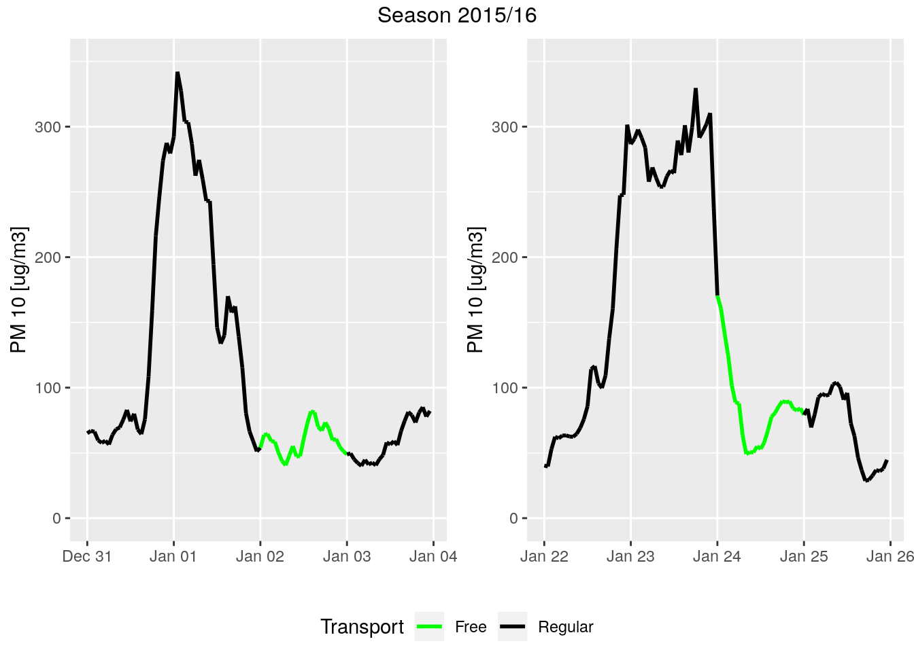
Figure 3: Isolated days with free transport in the season 2015/16

Figure 4: Isolated days with free transport in the season 2016/17
We can see that at all of those days pollution dropped before morning, when we could expect some impact of extraordinary transport policy. This is with accordance with common objection that free transport is provided too late.
We can of course ask whether free transport has not prevented the pollution to return to dangerous level. It is hard to answer this question with data we have. Some explanatory model could be useful here but modeling pollution is difficult, as we will see below. However, differences in the pollution level seem to be much bigger than possible impact of communication (c. a. 16% of total pollution).
Series
Rest of the days with free transport can be naturally compounded into longer series:
## [1] "LC_CTYPE=en_US.UTF-8;LC_NUMERIC=C;LC_TIME=en_US.UTF-8;LC_COLLATE=en_US.UTF-8;LC_MONETARY=en_US.UTF-8;LC_MESSAGES=pl_PL.UTF-8;LC_PAPER=pl_PL.UTF-8;LC_NAME=C;LC_ADDRESS=C;LC_TELEPHONE=C;LC_MEASUREMENT=pl_PL.UTF-8;LC_IDENTIFICATION=C"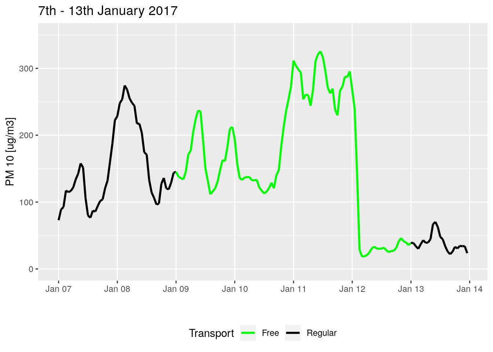
Figure 5: Air pollution and transport policy between 7th and 13th January 2017
## [1] "LC_CTYPE=en_US.UTF-8;LC_NUMERIC=C;LC_TIME=en_US.UTF-8;LC_COLLATE=en_US.UTF-8;LC_MONETARY=en_US.UTF-8;LC_MESSAGES=pl_PL.UTF-8;LC_PAPER=pl_PL.UTF-8;LC_NAME=C;LC_ADDRESS=C;LC_TELEPHONE=C;LC_MEASUREMENT=pl_PL.UTF-8;LC_IDENTIFICATION=C"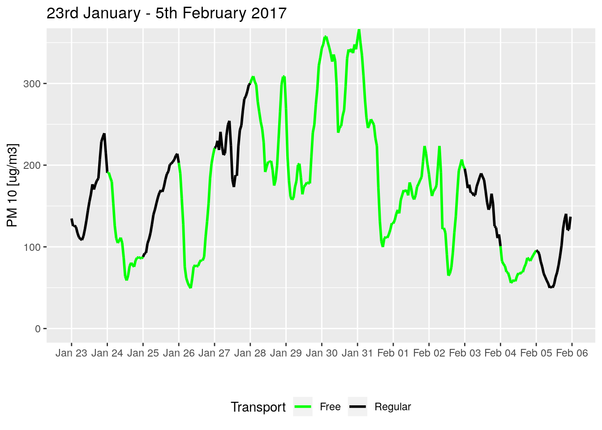
Figure 6: Air pollution and transport policy between 23rd January and 5th February 2017
## [1] "LC_CTYPE=en_US.UTF-8;LC_NUMERIC=C;LC_TIME=en_US.UTF-8;LC_COLLATE=en_US.UTF-8;LC_MONETARY=en_US.UTF-8;LC_MESSAGES=pl_PL.UTF-8;LC_PAPER=pl_PL.UTF-8;LC_NAME=C;LC_ADDRESS=C;LC_TELEPHONE=C;LC_MEASUREMENT=pl_PL.UTF-8;LC_IDENTIFICATION=C"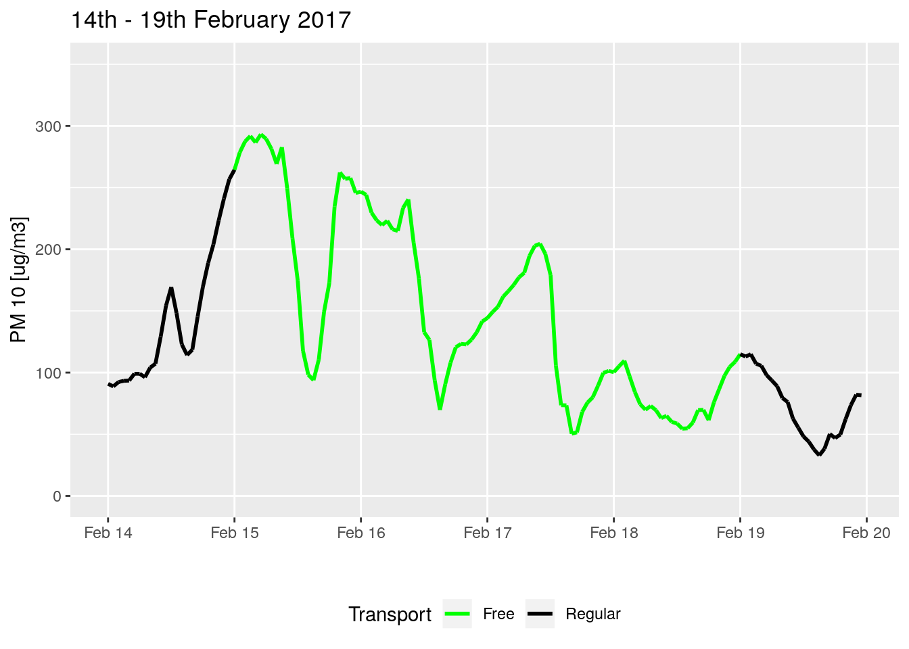
Figure 7: Air pollution and transport policy between 14th and 19th February 2017
Figure 6 reveals the second disadvantage of policy based previous-day data. When pollution level oscillates, it can go to low level at one day, then free transport is switched off and then pollution returns to the high level and we end up with high pollution and regular transport policy.
We can also see from all seven plots above that longer trend has (at least at days with high pollution) more impact on the pollution course than average daily patterns.
Announcements based on forecasts
From the beginning of 2018 announcements are based on forecasts. Unfortunately, the quality of those forecasts is far from satisfactory. At all three days when free transport was provided in 2018, pollution was not very high, according to old version of resolution standards:
## [1] "LC_CTYPE=en_US.UTF-8;LC_NUMERIC=C;LC_TIME=en_US.UTF-8;LC_COLLATE=en_US.UTF-8;LC_MONETARY=en_US.UTF-8;LC_MESSAGES=pl_PL.UTF-8;LC_PAPER=pl_PL.UTF-8;LC_NAME=C;LC_ADDRESS=C;LC_TELEPHONE=C;LC_MEASUREMENT=pl_PL.UTF-8;LC_IDENTIFICATION=C"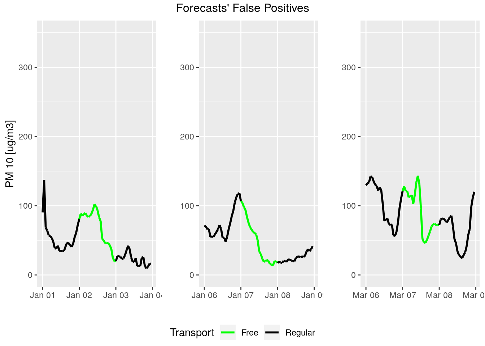 Figure 8: Forecasts’ False Positives
Moreover, there were three days when pollution was high, but forecasts did not predict it:
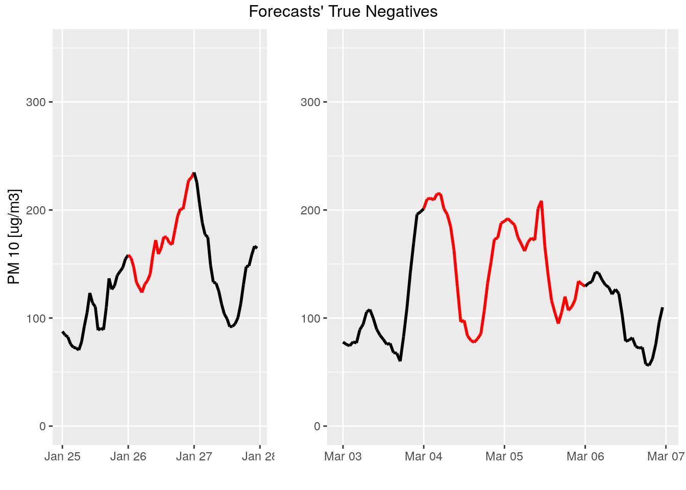
Figure 9: Forecasts’ True Negatives
Forecasting
With such a bad forecasts it would be good to try make something better. IMGW claims at their website to use models of two types: stochastic (including ARIMAX and neural networks) and physical deterministic models. I will reconstruct the ARIMAX model.
One can thing about ARIMAX (Autoregressive Integrated Moving Average with Exogenous Variables) in the following way (according to Rob Hyndman):
- We fit linear models explaining a given quantity by exogenous variables. In our case we will treat air pollution level as dependent on some meteorological variables. We will use meteorological data from a given day to predict air pollution the next day.
- Then we fit ARIMA model to residuals of the model fitted in step one.
I will fit the model on training set which I choose to be a period when older version of resolution was in use and check its performance on test set which will be period of new resolution. This set approximately fits common rule of 80/20 division.
Dependence of PM 10 on meteorology
I will use data about cloudiness, wind speed, temperature, humidity, atmospheric pressure and precipitation.
xmodel <- lm(pm10 ~ ., data = train[-1])
summary(xmodel)
paste('AIC:', AIC(xmodel))##
## Call:
## lm(formula = pm10 ~ ., data = train[-1])
##
## Residuals:
## Min 1Q Median 3Q Max
## -106.239 -21.897 -3.253 15.812 161.585
##
## Coefficients:
## Estimate Std. Error t value Pr(>|t|)
## (Intercept) -587.2215 211.6203 -2.775 0.00581 **
## Cloudy -7.2079 1.1724 -6.148 2.11e-09 ***
## Wind_speed -5.9726 1.1668 -5.119 5.05e-07 ***
## Temperature -2.7396 0.4252 -6.443 3.81e-10 ***
## Humidity 0.3551 0.2576 1.379 0.16880
## Atm_pressure 0.7011 0.2155 3.254 0.00125 **
## Precipitation -0.8620 0.8078 -1.067 0.28668
## ---
## Signif. codes: 0 '***' 0.001 '**' 0.01 '*' 0.05 '.' 0.1 ' ' 1
##
## Residual standard error: 35.67 on 356 degrees of freedom
## Multiple R-squared: 0.4559, Adjusted R-squared: 0.4467
## F-statistic: 49.72 on 6 and 356 DF, p-value: < 2.2e-16
##
## [1] "AIC: 3634.09630688059"xmodel <- lm(pm10 ~ . - Precipitation, data = train[-1])
summary(xmodel)
paste('AIC:', AIC(xmodel))##
## Call:
## lm(formula = pm10 ~ . - Precipitation, data = train[-1])
##
## Residuals:
## Min 1Q Median 3Q Max
## -107.065 -21.395 -2.999 15.196 161.098
##
## Coefficients:
## Estimate Std. Error t value Pr(>|t|)
## (Intercept) -649.0786 203.5648 -3.189 0.001556 **
## Cloudy -7.2260 1.1726 -6.163 1.93e-09 ***
## Wind_speed -6.1697 1.1524 -5.354 1.54e-07 ***
## Temperature -2.7795 0.4236 -6.561 1.88e-10 ***
## Humidity 0.2987 0.2521 1.185 0.236854
## Atm_pressure 0.7683 0.2061 3.728 0.000225 ***
## ---
## Signif. codes: 0 '***' 0.001 '**' 0.01 '*' 0.05 '.' 0.1 ' ' 1
##
## Residual standard error: 35.68 on 357 degrees of freedom
## Multiple R-squared: 0.4542, Adjusted R-squared: 0.4465
## F-statistic: 59.41 on 5 and 357 DF, p-value: < 2.2e-16
##
## [1] "AIC: 3633.25542058121"xmodel <- lm(pm10 ~ . - Precipitation - Humidity, data = train[-1])
summary(xmodel)
paste('AIC:', AIC(xmodel))##
## Call:
## lm(formula = pm10 ~ . - Precipitation - Humidity, data = train[-1])
##
## Residuals:
## Min 1Q Median 3Q Max
## -107.273 -21.747 -3.136 16.114 162.929
##
## Coefficients:
## Estimate Std. Error t value Pr(>|t|)
## (Intercept) -664.9376 203.2389 -3.272 0.00117 **
## Cloudy -6.5065 1.0037 -6.483 2.99e-10 ***
## Wind_speed -6.5695 1.1025 -5.959 6.08e-09 ***
## Temperature -2.9118 0.4089 -7.121 5.90e-12 ***
## Atm_pressure 0.8070 0.2036 3.963 8.92e-05 ***
## ---
## Signif. codes: 0 '***' 0.001 '**' 0.01 '*' 0.05 '.' 0.1 ' ' 1
##
## Residual standard error: 35.7 on 358 degrees of freedom
## Multiple R-squared: 0.452, Adjusted R-squared: 0.4459
## F-statistic: 73.83 on 4 and 358 DF, p-value: < 2.2e-16
##
## [1] "AIC: 3632.68015444722"As we can see cloudiness, wind speed, temperature, and atmospheric pressure are marked as significant. Of course this model does not fulfill assumptions of linear models theory since we assume residuals of this models are ARIMA like, not a gaussian noise.
Full ARIMAX
Let us fit ARIMA process to residuals of the model. After some tests I decided for (1, 1, 1) ARIMA parameters. The graph below shows values predicted by final model on a test set.
## Series: res
## ARIMA(2,1,2)
##
## Coefficients:
## ar1 ar2 ma1 ma2
## 1.0329 -0.1378 -1.7717 0.7748
## s.e. 0.1628 0.0810 0.1512 0.1483
##
## sigma^2 estimated as 1152: log likelihood=-1788.82
## AIC=3587.64 AICc=3587.81 BIC=3607.1
##
## Training set error measures:
## ME RMSE MAE MPE MAPE MASE
## Training set -3.684319 33.71364 24.11465 142.8538 222.9802 0.7956763
## ACF1
## Training set -0.005628832## Series: res
## ARIMA(1,1,1)
##
## Coefficients:
## ar1 ma1
## 0.2237 -0.9450
## s.e. 0.0650 0.0348
##
## sigma^2 estimated as 1155: log likelihood=-1789.98
## AIC=3585.95 AICc=3586.02 BIC=3597.63
##
## Training set error measures:
## ME RMSE MAE MPE MAPE MASE
## Training set -2.562952 33.84763 24.19932 155.781 239.7913 0.7984701
## ACF1
## Training set -0.008290963## [1] "LC_CTYPE=en_US.UTF-8;LC_NUMERIC=C;LC_TIME=en_US.UTF-8;LC_COLLATE=en_US.UTF-8;LC_MONETARY=en_US.UTF-8;LC_MESSAGES=pl_PL.UTF-8;LC_PAPER=pl_PL.UTF-8;LC_NAME=C;LC_ADDRESS=C;LC_TELEPHONE=C;LC_MEASUREMENT=pl_PL.UTF-8;LC_IDENTIFICATION=C"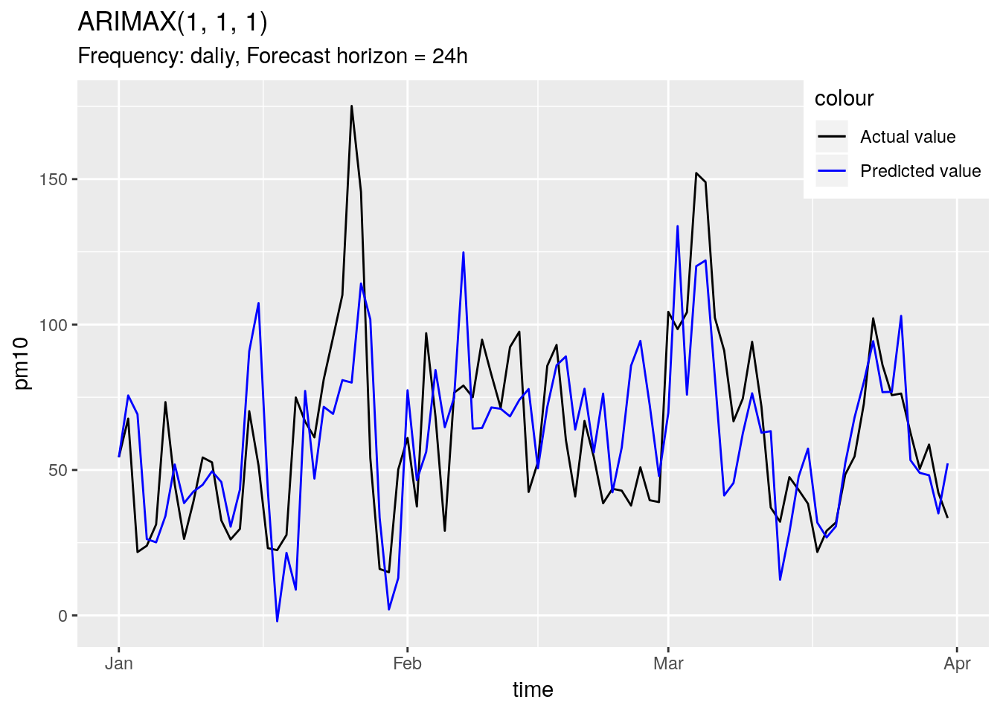
Figure 10: Day-by-day forecast with ARIMAX (1, 1, 1)
Mean Average Percentage Error of the forecast equals 37.5%.
Conversion to decision model
The forecast predicts daily average pollution but criteria specified in resolution deal with within-day time windows. So there is a need to specify some threshold to decide on a base of forecast whether to provide a free transport or not. I will use ROC curve to determine this threshold.
## [1] "LC_CTYPE=en_US.UTF-8;LC_NUMERIC=C;LC_TIME=en_US.UTF-8;LC_COLLATE=en_US.UTF-8;LC_MONETARY=en_US.UTF-8;LC_MESSAGES=pl_PL.UTF-8;LC_PAPER=pl_PL.UTF-8;LC_NAME=C;LC_ADDRESS=C;LC_TELEPHONE=C;LC_MEASUREMENT=pl_PL.UTF-8;LC_IDENTIFICATION=C"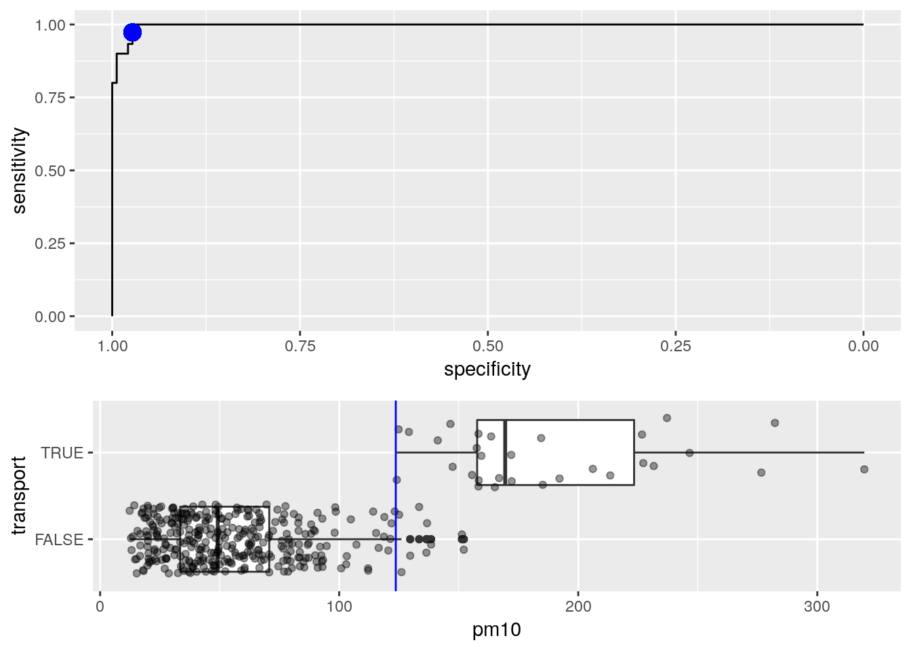
Figure 11: Dependence between predicted daily average and transport policy
The optimal value (in accuracy metric) for threshold determined on training data equals 123.68. Unfortunately it does not provide useful model:
## [1] "LC_CTYPE=en_US.UTF-8;LC_NUMERIC=C;LC_TIME=en_US.UTF-8;LC_COLLATE=en_US.UTF-8;LC_MONETARY=en_US.UTF-8;LC_MESSAGES=pl_PL.UTF-8;LC_PAPER=pl_PL.UTF-8;LC_NAME=C;LC_ADDRESS=C;LC_TELEPHONE=C;LC_MEASUREMENT=pl_PL.UTF-8;LC_IDENTIFICATION=C"| time | pm10 | prediction | Free_transport_prediction | Fulfilling_old_criteria |
|---|---|---|---|---|
| 2018-01-26 | 175.14513 | 80.04583 | FALSE | TRUE |
| 2018-02-07 | 79.01285 | 124.79153 | TRUE | FALSE |
| 2018-03-02 | 98.43088 | 133.82351 | TRUE | FALSE |
| 2018-03-04 | 152.08425 | 120.05496 | FALSE | TRUE |
| 2018-03-05 | 148.94461 | 122.04525 | FALSE | TRUE |
Table 2: Confusion table for ARIMAX predictions based model
This is not a good model. It has two false positives and three false negatives. Still better than official model but certainly unsatisfactory.
Hourly-grained model
Let us use hourly taken measurements instead of daily averages. We do not have such detailed meteorological data so probably the best we can do is to use the same, average data for the whole day.
However we could expect 24-hour seasonality in our data, main tests for seasonality do not spot it. I decided then to use arithmetic mean of two ARIMA models: (3, 1, 3) without seasonality and (2, 1, 2) with (1, 1, 1) 24-hour seasonality. Both of them has some advantages and disadvantages and the mean has lower error then any of the two alone.
The figure below shows values predicted by this model on test data:
## [1] "LC_CTYPE=en_US.UTF-8;LC_NUMERIC=C;LC_TIME=en_US.UTF-8;LC_COLLATE=en_US.UTF-8;LC_MONETARY=en_US.UTF-8;LC_MESSAGES=pl_PL.UTF-8;LC_PAPER=pl_PL.UTF-8;LC_NAME=C;LC_ADDRESS=C;LC_TELEPHONE=C;LC_MEASUREMENT=pl_PL.UTF-8;LC_IDENTIFICATION=C"## Series: htrain$pm10
## Regression with ARIMA(2,1,2)(1,1,1)[24] errors
##
## Coefficients:
## ar1 ar2 ma1 ma2 sar1 sma1 Cloudy
## -0.3532 0.2712 0.7224 -0.0149 0.0108 -0.9784 -0.5928
## s.e. 0.1395 0.0492 0.1394 0.0275 0.0111 0.0028 0.2757
## Wind_speed Temperature Humidity Atm_pressure
## 0.5063 0.3852 0.1686 0.0799
## s.e. 0.2765 0.2035 0.0672 0.0835
##
## sigma^2 estimated as 91.45: log likelihood=-31991.05
## AIC=64006.11 AICc=64006.14 BIC=64090.95
##
## Training set error measures:
## ME RMSE MAE MPE MAPE MASE
## Training set -0.009016684 9.543032 6.241542 -0.1528019 12.97441 0.9015498
## ACF1
## Training set -0.0002174948## [1] "LC_CTYPE=en_US.UTF-8;LC_NUMERIC=C;LC_TIME=en_US.UTF-8;LC_COLLATE=en_US.UTF-8;LC_MONETARY=en_US.UTF-8;LC_MESSAGES=pl_PL.UTF-8;LC_PAPER=pl_PL.UTF-8;LC_NAME=C;LC_ADDRESS=C;LC_TELEPHONE=C;LC_MEASUREMENT=pl_PL.UTF-8;LC_IDENTIFICATION=C"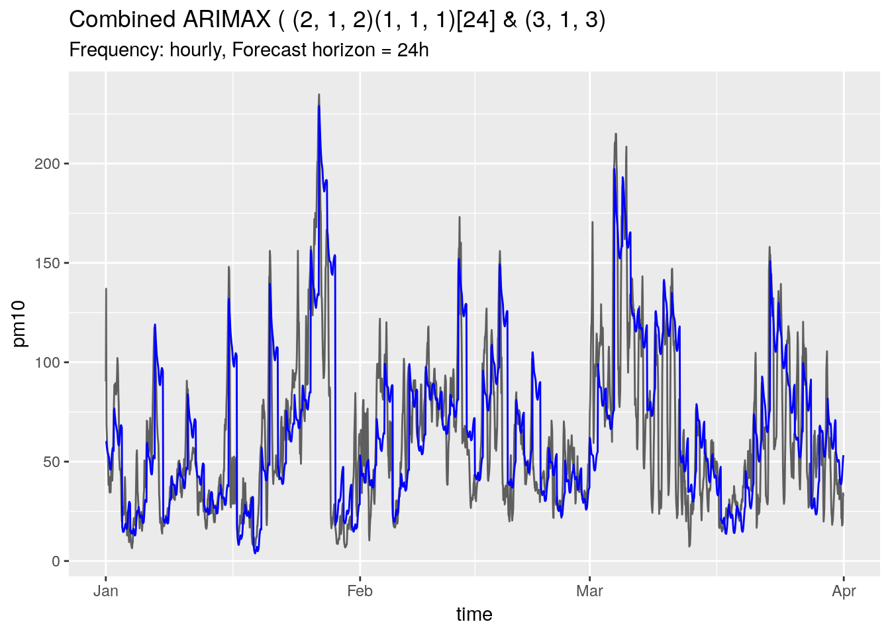
Figure 11: Forecast with hourly-collected data
Mean Percentage Error of this forecast equals 48.6%. This model, however, is better with respect to decision process:
## [1] "LC_CTYPE=en_US.UTF-8;LC_NUMERIC=C;LC_TIME=en_US.UTF-8;LC_COLLATE=en_US.UTF-8;LC_MONETARY=en_US.UTF-8;LC_MESSAGES=pl_PL.UTF-8;LC_PAPER=pl_PL.UTF-8;LC_NAME=C;LC_ADDRESS=C;LC_TELEPHONE=C;LC_MEASUREMENT=pl_PL.UTF-8;LC_IDENTIFICATION=C"| time | above150_real | above150_pred | |
|---|---|---|---|
| 26 | 2018-01-26 | TRUE | FALSE |
| 27 | 2018-01-27 | FALSE | TRUE |
| 28 | 2018-01-28 | FALSE | TRUE |
| 63 | 2018-03-04 | TRUE | TRUE |
| 64 | 2018-03-05 | TRUE | TRUE |
Table 3: Confusion table for combined ARIMAX with hourly-collected PM 10 data
Although it has one true negative and two false positives this model correctly predicted two days with high pollution. Let take a closer look for predictions from table above.
## [1] "LC_CTYPE=en_US.UTF-8;LC_NUMERIC=C;LC_TIME=en_US.UTF-8;LC_COLLATE=en_US.UTF-8;LC_MONETARY=en_US.UTF-8;LC_MESSAGES=pl_PL.UTF-8;LC_PAPER=pl_PL.UTF-8;LC_NAME=C;LC_ADDRESS=C;LC_TELEPHONE=C;LC_MEASUREMENT=pl_PL.UTF-8;LC_IDENTIFICATION=C"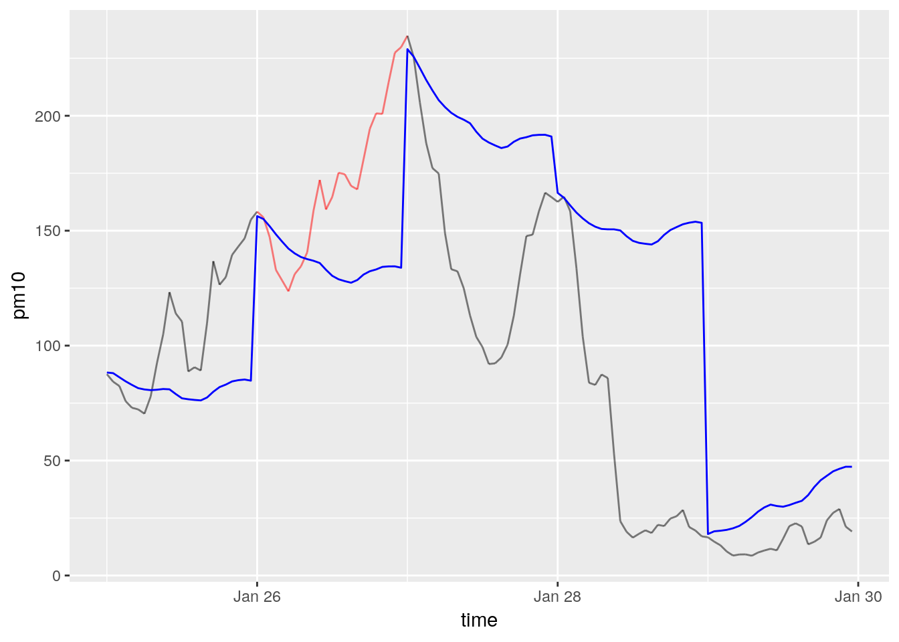
Figure 12: Predicted and actual level of PM 10 between 25th to 29th January 2018
## [1] "LC_CTYPE=en_US.UTF-8;LC_NUMERIC=C;LC_TIME=en_US.UTF-8;LC_COLLATE=en_US.UTF-8;LC_MONETARY=en_US.UTF-8;LC_MESSAGES=pl_PL.UTF-8;LC_PAPER=pl_PL.UTF-8;LC_NAME=C;LC_ADDRESS=C;LC_TELEPHONE=C;LC_MEASUREMENT=pl_PL.UTF-8;LC_IDENTIFICATION=C"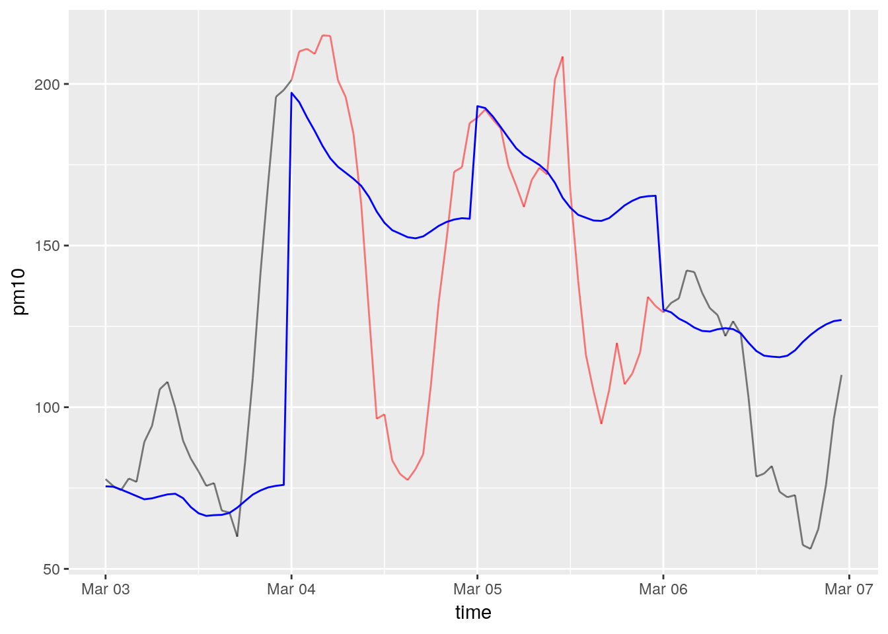
Figure 13: Predicted and actual level of PM 10 between 3rd to 6th March 2018
We can see that this forecast exhibits serious underperfomance when daily amplitude of PM 10 level is high, but it can predict (not always correctly) some daily trend.
At 26th January the forecast misleadingly predicts decay in pollution level. At 27th and 28th it is overpesimistic (as generally unable to find huge daily differences). These three are all the false predictions. In March on the other hand this lack of flexibility does not lead predictions to the wrong side of the decision threshold.
Conclusions and additional remarks
Meteorological phenomena often exhibits some features like Josphus’ effect and fractional noises which make ARIMA modeling a sub-optimal method in this domain. Usage of multivariate models could be also beneficial since in models presented above we take into account only correlation between PM 10 level at different days (or hours) and neither autocorrelations in meteorological data nor cross-correlations.
This very inaccurate model is however better with respect to decision making than official model. The reason for that may be the fact that new resolution requires forecast to be interpolated to the whole area of city (data from stations is not enough) and such interpolated predictions are used. This interpolation process may be source of some error propagation.